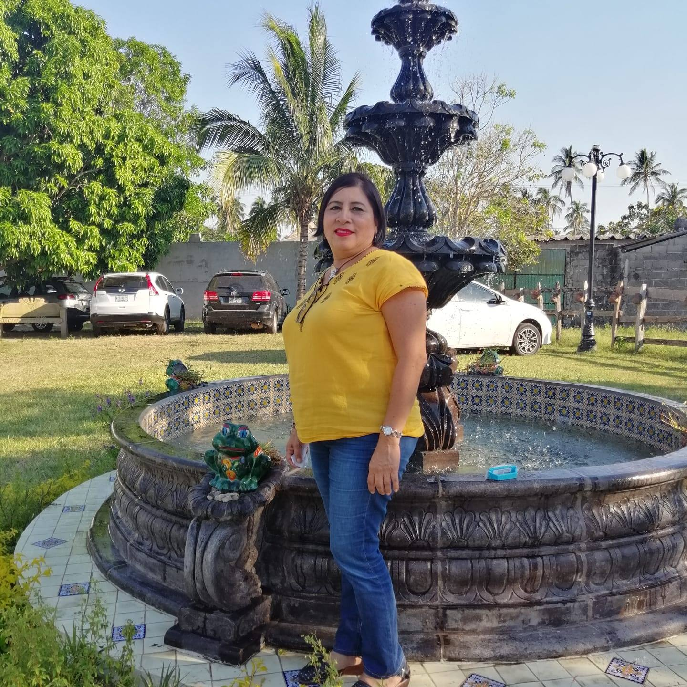

La mejor manera de encontrarse es sabiendose perder...
Mi historia comienza con la decisión de ser Licenciado en Turismo, por el Instituto de Estudios Universitarios. Mis
intereses empresariales son: El emprendimiento, el asesoriamiento, la dirección, la mercadotectnia,la publicidad,la
administración de negocios,
me considero una persona que le gusta entablar amistad y confianza para hacer lazos en donde los proyectos que tenga
se hagan realidad, me gusta dirigir a la gente, poderlos asesorar y así cumplir los objetivos que se me impongan y
los
objetivos que mi mismo equipo se ha impuesto. Soy una persona como cualquier otra queriendo superarme en todas mis
áreas, tanto personales como profesionales, siempre en constante movimiento, siempre aprendiendo y desaprendiendo
para volver
a reaprender. Mi meta profesional y personal es lograr cerrar todos los caminos de aprendizaje y de todo tipo de
conocimiento, bien dice Musashi Miyamoto, que hay que cerrar todas las vias de aprendizaje, hasta no tener camino
que aprender.Este
soy yo, alguien que le apasiona la enseñanza, la mercadotecnia, la administración empresarial, el desarrollo de
páginas web, la música, el arte; estar con su familia. Dios, y mi familia son lo más importante en mi vida. Sin importar, la situación tengo un código muy fuerte en cuanto a
mi moralidad, creo en el honor, en la familia, y que lo imposible es siempre posible.
Como interes, me gusta estar con mi familia, soy una persona muy hogareña, una persona que le gusta estar con su familia, me gusta leer, estar documentado sobre temas de los cuales me importan mucho y son parte de mi vida. Las artes marciales, forman tambien de mis aficiones, el coding, el ver peliculas y caminar, forman parte de mi vida. Me interesa, forjar lazos con las personas que estan en mi al rededor.
En mis estudios está el haber concluido la educación básica(Primaria) en varias escuelas(Melchor Ocampo García,
Thomas Alva Edison, Andrés García Mayo) empezando en el año 1995 al 2001, para posteriormente ir a la educación
media superior en la secundaria
y de la preparatoria en la escuela Activa Jean Pieaget, de los cuales pasé 6 años en ella estudiando(2001-2008).
Posteriormente, en la educación superior pertenece a mi alma mater a los Rhinos del IEU,(2010-2016). Del cual
actualmente
estoy por terminar una maestria en educación en la misma Instución Universitaria (2017,-?). Así mismo ya terminado
mis estudios lo consiguiente es poder seguir capacitandome más y ser un buen maestro, en las ramas que anteriormente
me
he dicho como interés. Mi anhelo es dar docencia, capacitar, impulsar, emprender y dar lo mejor de mi.
Como experiencias en lo profesional, está el haber enseñado por mi cuenta a muchachos en casa desde diferentes problemas de aprendizaje, al igual que mujeres que han querido acercarse a la tecnología mediante la programación web y que han querido actualizarse al manejo de sus computadoras personales, en mi haber se cuenta el haber impartido clases de defensa personal, hasta crear mis propios talleres didacticos. Como emprendedor he aprendido mucho de la licenciatura de la cual poseo. Los negocios son parte de mi genetica, no hay día que no imparta, hable sobre ellos y el conocimiento sobre emprendimiento, negocios, turismo, mercadotecnia, tecnología y enseñanza. Soy un apasionado por la enseñanza.
He trabajado en Xpectre Labs, donde aprendí el desarrollo web, con el Ingeniero Jesús Manuel García Torres, como experiencia tambien tengo haber trabajado en Hospital Psiquiatrio De Alta Especialidad del Estado de Tabasco con la Licenciada Silvia Bautista, del cual estuve colaborando como auxiliar administrativo, en donde tuve la experencia del conteo y supervisión de los pacientes en cuanto a sus ingresos e egresos, como trabajador de la Junta Estatal de Caminos, estuve como rotativo de auxiliar de peón y administrativo, con el Ingeniero Gustavo.
Como experiencia general, no me da miedo emprender un nuevo camino si se trata de aprender algo nuevo, no tengo miedo a poder relacionarme con la gente en mi entorno. No tengo miedo de diseñar estrategias de trabajo, para mejorar la calidad de mi equipo de trabajo.
Contacto de las personas con quien he colaborado

Licenciada Silvia Maria Bautista
Jefa de Planeación Hospital de Salud Mental de Alta Especialidad de Salud Mental del Estado de
Tabasco.
Informes en los enlaces de aquí abajo ↓

Ingeniero Jesús Manuel García Torres
CEO de XpectreLabs
Informes en los enlaces de aquí abajo ↓

Ingeniero Gustavo Santiago
Jefe de Prospectos y Proyectos de Caminos
Informes en los enlaces de aquí abajo ↓
Kike Sánchez Silván
Empoderado en el aprendizaje de taller
Entre mis logros, está el poseer conocimientos, en Inglés Americano Intermedio, Fránces Básico, Photoshop CC, Visual
Studio Code, Windows Vista, windows 7, Windows 10, Vegas Pro, en cuanto a la paquetería de office me desenvuelvo correctamente
en word, powerpoint intermedio y excel básico.
He trabajado para el gobierno del estado de Tabasco como Auxiliar Administrativo, en el Hospital de Salud Mental de
Alta Especialidad del Estado de Tabasco.
He trabajado para el gobierno del estado de Tabasco como Rotativo de Peón y Auxiliar Administrativo, en la Junta
Estatal de Caminos.
En XpectreLabs lo que antes se conocia como NodeSchool Tabasco, me dí a desarrollar en talleres, y di apoyo en cuestiones de Mercadotecnia.
Como prestigio tengo el logro de haber trabajado en XpectreLabs, aprender a desarrollar una página web con HTML5 y CSS3, aprender lenguaje de programación básico de JavaScript, Dominar Photoshop CC Básico, Visual Code Studio. Nunca defraudaré si se trata de liderar o enseñar, puedo aprender a cualquier programa si me dan la oportunidad de hacerlo, soy un autodidacta nato. Entre otros logros que tienen en alto mi prestigio, es haber incursionado en YouTube, por ende entiendo la mercadotecnía y como vender.
Inglés Americano
Francés
Word
Powerpoint
Excel
Liderazgo
Diseño y Diseño web (Bootstrap, Materialize, HTML5,CSS3)
Negocios, Mercadotecnía
Turismo, Docencia

Workshop de herramientas tecnologicas en el mkt
Impartí conocimientos de SEO, de Mercadotecnia que he tenido experiencia gracias a mi canal.

Soy Experto en la enseñanza de los negocios.
Aquí mi primer taller en tecnología y mercadotecnia.